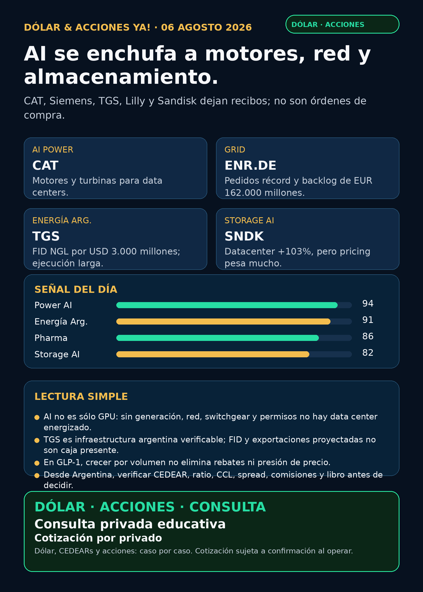

AI se enchufa a motores, red y almacenamiento.
CAT, Siemens Energy, TGS, Lilly y Sandisk: recibos verificables, riesgo visible y cero promesas.
Texto WhatsApp
Placa del día

Dólar & Acciones YA — 06/08
Fecha de edición: 2026-08-06. Corte público: 08:49 ART, America/Argentina/Mendoza. El mercado estadounidense todavía no abrió; no se publican precios de acciones ni instrucciones de ejecución. Esto es research educativo para Argentina y para una cartera global; no es recomendación personalizada de compra ni de venta.
Lectura simple del día
La tesis de hoy es simple: AI no termina en el chip. Para encender un data center hacen falta motores, turbinas, red, switchgear, almacenamiento y permisos. Caterpillar (CAT) y Siemens Energy (ENR.DE) dejaron recibos de ventas, órdenes, backlog y caja. En Argentina, Transportadora de Gas del Sur (TGS) dejó un FID de infraestructura exportadora. En salud y storage, Eli Lilly (LLY) y Sandisk (SNDK) muestran demanda real, pero también riesgos que el titular entusiasta suele ocultar.
Las señales están ordenadas por evidencia y valor educativo, no por orden de compra. Buena empresa ≠ buena inversión al precio actual ≠ buen instrumento para Argentina ≠ tamaño correcto dentro de una cartera.
Capa Argentina: dólar, MEP/CCL y CEDEARs
- Dólar público: BlueLytics informó blue vendedor ARS 1.540 y oficial vendedor ARS 1.520, con actualización 06/08 08:45 ART.
- Referencias financieras: CriptoYa mostró MEP AL30 24hs ARS 1.525,22 (05/08 16:58 ART) y CCL AL30 24hs ARS 1.598,34 (05/08 16:59 ART). Son cierres/referencias públicas, no cotización intradiaria de un broker.
- En criollo: un CEDEAR es un instrumento local que representa una fracción de un activo extranjero. Antes de hacer cualquier operación hay que mirar ratio, CCL implícito, libro, volumen, spread, plazo y comisiones. Un ticker de Nueva York o Xetra no prueba disponibilidad ni liquidez en PPI/IOL.
Accionable local Argentina: TGS declara cotización BYMA/NYSE, pero especie, plazo, libro, liquidez y costos deben verificarse en el broker antes de hablar de ejecución. Accionable internacional/global: CAT, LLY, SNDK y GEV son instrumentos estadounidenses; ENR.DE cotiza en Xetra. Proxy local imperfecto: CAT o GE pueden ser vías cercanas si el broker ofrece el CEDEAR, pero no son lo mismo que Siemens Energy o GE Vernova. No accionable directo: RVII sigue sin listing, NAV, liquidez y acceso Argentina verificados.
Tesis central
El segundo peaje de AI es electricidad física. Una GPU sin generación disponible, transformador, subestación, breaker, cooling y conexión a la red no produce capacidad. El moat, o ventaja difícil de copiar, puede estar en fábricas certificadas, backlog, installed base, contratos de servicio y capacidad de entregar equipos a tiempo; no sólo en una etiqueta de “AI”.
Ranking educativo de señales de hoy
- Generación y grid —
CAT/ENR.DE: resultados frescos que convierten la tesis física de AI en ventas, pedidos y caja. - Energía Argentina —
TGS: FID verificable para infraestructura NGL; oportunidad industrial de años con ejecución y financiación por delante. - Pharma —
LLY: volumen GLP-1 y guidance mejores, contra rebajas/precio realizado y pipeline aún regulatorio. - Storage AI —
SNDK: datacenter aceleró fuerte, pero el pricing explica buena parte del salto. - Power hardware estructural —
GEV: expansión de breakers, switchgear e instrument transformers valida el cuello de botella, aunque no sea una novedad de 24–72 horas.
Señales verificadas
1. Generación para data centers — Caterpillar (CAT)
- Qué pasó: Q2 con ventas e ingresos de USD 20.500 millones (+24% interanual). Power & Energy vendió USD 8.238 millones (+17%) y Power Generation USD 3.098 millones (+29%).
- Por qué importa: la compañía atribuyó el avance de generación a grandes motores, turbinas y servicios principalmente para data centers. Es evidencia de que AI también compra electricidad física.
- Riesgo:
CATno es un pure-play de AI; ciclo industrial, costos, tarifas, capex del cliente y valuación siguen importando. - Fuente primaria: SEC EX-99.1 de Caterpillar, 04/08.
- Estado: señal fortalecida / en radar, no orden de compra.
2. Grid y power equipment — Siemens Energy (ENR.DE)
- Qué pasó: Q3 FY26 con órdenes récord de EUR 17.900 millones, backlog de EUR 162.000 millones, revenue de EUR 11.400 millones (+18,5% comparable), profit before special items de EUR 1.623 millones y free cash flow pre-tax de EUR 2.319 millones.
- Por qué importa: Gas Services, Grid Technologies y Transformation of Industry dejan recibo de demanda de equipamiento y generación. No todo ese backlog es data centers; tampoco hay que fingirlo.
- Riesgo:
ENR.DEes Siemens Energy, no Siemens AG. Desde Argentina es mercado extranjero hasta confirmar broker, costos y liquidez. - Fuente primaria: Investor Relations de Siemens Energy, release Q3 FY26 del 05/08.
- Estado: señal fortalecida / radar global.
3. Energía Argentina — Transportadora de Gas del Sur (TGS)
- Qué pasó: Q2 con revenue de ARS 535.522 millones, operating profit de ARS 216.327 millones y comprehensive income de ARS 133.145 millones. También informó FID para el Integrated NGLs Project: inversión estimada de USD 3.000 millones, exportaciones anuales esperadas de aproximadamente USD 1.200 millones y comienzo operativo proyectado para marzo de 2030.
- Lectura en criollo: gas, líquidos, fraccionamiento, almacenamiento y terminal marítima son infraestructura productiva argentina. FID significa que se tomó la decisión de avanzar; no que ya entró el revenue.
- Riesgo: financiación, permisos, RIGI/regulación, commodities, hitos 2026–2030 y ejecución.
- Fuente primaria: SEC 6-K de TGS, 03/08.
- Estado: señal fortalecida / vigilar ejecución, no recomendación.
4. Pharma / GLP-1 — Eli Lilly (LLY)
- Qué pasó: Q2 revenue de USD 22.974 millones (+48% interanual); Mounjaro aportó USD 9.943 millones (+91%) y Zepbound USD 4.928 millones (+46%). La guía FY2026 de revenue subió a USD 85.000–87.000 millones.
- Qué no dice el titular: excluyendo ajustes de rebates/descuentos, el precio realizado en Estados Unidos habría caído cerca de 9% y fuera de Estados Unidos 36%. Retatrutide está en Phase 3; una presentación BLA prevista para Q1 2027 no es aprobación hoy.
- Fuente primaria: SEC EX-99.1 de Eli Lilly, 05/08.
- Estado: tesis operativa fortalecida / vigilar precio, rebates y regulación.
5. Storage para AI — Sandisk (SNDK)
- Qué pasó: fiscal Q4 revenue de USD 8.965 millones (+51% secuencial); Datacenter revenue de USD 2.977 millones (+103% secuencial). La guía FQ1 2027 es USD 10.300–10.800 millones.
- Lectura en criollo: storage para nube, edge y workloads AI tiene demanda, pero aproximadamente dos tercios del avance secuencial vinieron de mayores precios. Una subida cíclica de NAND no es crecimiento lineal garantizado.
- Fuente primaria: SEC EX-99.1 de Sandisk, 05/08.
- Estado: señal fortalecida / vigilar ciclo y pricing.
Energía, transformadores y power hardware
- GE Vernova (
GEV): expansión de USD 138 millones en Charleroi para circuit breakers, switchgear e instrument transformers; conecta la reducción de lead times con la nueva carga eléctrica, incluidos data centers. Es confirmación estructural de 30/07, no catalizador fresco de hoy. Fuente primaria. - Transformadores:
GEVes el proxy público más limpio de grid/power en Estados Unidos;ENR.DEes Siemens Energy en Xetra; Hitachi/Hitachi Energy, HD Hyundai Electric y Hyosung siguen en radar global. No se presentan como acceso fácil desde Argentina sin chequear broker. - Privadas: Virginia Transformer y Delta Star ayudan a entender capacidad y lead times, pero no son acciones comprables.
- Energéticas argentinas:
YPF,PAMP,CEPU,TGS,VISTy otras fueron revisadas. La señal fresca fuerte del corte esTGS; las demás no tuvieron una primaria superior que justifique inventar un titular.
Watchlist base Mi Simulación
SNDK: señal nueva arriba; próximo chequeo = volumen versus precio, inventario y mix datacenter.NVDA,TSM,MU,GOOGL/GOOG,AAPL,HOOD,TSLA,ASML,AVGO,CBRSyPLTR: revisados. No apareció una primaria 24–72h más fuerte que las tesis ya indexadas, así que no se rellena con ruido.RKLB: RSS repitió una supuesta adjudicación de USD 397 millones para Space Force/SB-AMTI. No quedó issuer, DoD o SEC que la pruebe al corte. No verificado / auditoría; no se publica como hecho.- Oro:
GLDes SPDR Gold Trust; Gold,GOLDyBno son intercambiables. Sin instrumento exacto no se asigna precio ni tesis. RVI: Forms 4 sin NAV, premium/descuento y holdings frescos no convierten un wrapper en oportunidad.
Pharma y salud: qué quedó revisado
LLY es la señal nueva fuerte. NVO, PFE, MRK, AMGN, AZN y biotech fueron revisados: no se eleva una aprobación, Fast Track, Phase 3 o rumor de M&A a titular sin regulador o primaria concreta. En salud, producto, volumen, cobertura, precio y regulación son cinco preguntas distintas.
Defensa, space, autonomía, fintech y crypto
- Defensa/aeroespacial:
AVAV,GE,RTX,LMT,NOC,GD,HWM,KTOS,BA,ITA/XARrevisados; sin contrato o filing primario nuevo para headline. - Space/orbital AI:
RKLB, SpaceX/SPCX, Starlink, Starship, sat-to-mobile y private wrappers revisados. La ausencia de primaria para RKLB vale más que cien eco-noticias. - Private markets:
RVIIdice que el order book está abierto, pero no prueba listing, NAV, liquidez, fees completos ni acceso Argentina. SEC FWP. No accionable directo. - Autonomía/physical AI: Tesla, Waymo/Alphabet, Uber, Zoox/Amazon y Joby revisados, sin señal regulatoria o comercial primaria nueva suficiente.
- Fintech/AI trading agents:
HOODrevisado. Un agente serio necesita datos correctos, modo read-only/paper, ledger, límites y aprobación humana; una demo no promete retornos. - Crypto gobernado: sin evento on-chain, ETF, rails o proxy regulado fresco. No se eleva ningún token.
Red flags / hype para ignorar
- “AI = sólo GPU”: falso; el cuello de botella puede estar en generación, red, interconexión, switchgear, cooling y permisos.
- “FID de TGS = USD 1.200 millones de ingresos hoy”: falso; es una proyección a ejecutar hasta 2030.
- “Más volumen GLP-1 = márgenes y precio garantizados”: falso; rebates, cobertura y competencia cambian la cuenta.
- “Datacenter +103% de SNDK = crecimiento lineal”: falso; pricing explica buena parte del salto.
- “Order book de RVII = acceso líquido a privadas”: falso; falta listing, NAV, fees, liquidez y acceso.
- “RSS repetido de RKLB = contrato confirmado”: falso hasta issuer, DoD o SEC.
Qué mirar después
- CAT / Siemens Energy: mix de data centers, cartera de pedidos, capacidad de fábrica, backlog y caja; separar demanda eléctrica amplia de AI específica.
- TGS: financiación, hitos, permisos, RIGI, costos y ejecución real del proyecto NGL.
- LLY: precio realizado, rebates, cobertura, seguridad y próximo paso regulatorio de retatrutide.
- SNDK: volumen versus ASP/pricing, inventario, mix datacenter y guía.
- Argentina: especie local, ratio CEDEAR, CCL, spread, libro, comisión y horizonte antes de cualquier decisión humana.
- RKLB / RVII: primaria de contrato para RKLB; EFFECT/424B4/listing/NAV/liquidez para RVII.
Portfolio/base Mi Simulación
La cartera de Ricardo fue liquidada, devuelta y terminada el 24/06. No hay posiciones activas ni P&L real que reportar. El radar sirve para vigilancia y para preparar una próxima compra con un nuevo inversor, no para inventar rendimiento de una cartera cerrada.
Recibo de cobertura
Revisados: watchlist base; AI infra/semis; energéticas argentinas; utilities, grid, transformadores, power hardware, generación y cooling; pharma/GLP-1; defensa/aeroespacial; space/private wrappers; autonomía/physical AI; fintech/AI agents; crypto gobernado y mercado amplio. Donde no hubo señal fuerte, dice “revisado”, no se rellena con hype.
Servicio privado
Dólar · Acciones · Consulta privada. Si querés comprar o vender dólares, entender CEDEARs, revisar riesgo o pensar una estrategia personal, se ve por privado y caso por caso. Cotización sujeta a confirmación al momento de operar.
Disclaimer
Esto es research informativo para decisión humana. No es asesoramiento financiero personalizado ni instrucción de compra/venta.